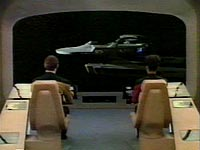
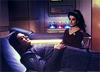
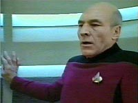
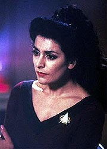
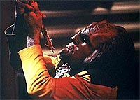

|
MANCHETE
DO EPISÓDIO
História
explora a importância do sono
na manutenção
da saúde mental
Episódio
anterior | Próximo
episódio
Sinopse:
Data Estelar: 44631.2.
A Enterprise encontra a nave estelar USS Brattain, desaparecida há
muitas semanas, à deriva no espaço. Com a exceção do conselheiro
Betazóide, toda a tripulação está morta.
 Enquanto
a tripulação da Enterprise investiga o acontecido, estranhos
eventos começam a ocorrer. Deanna Troi é atormentada por pesadelos
enquanto La Forge não consegue religar os motores da Brattain e a
tripulação da Enterprise começa a demonstrar sinais de uma
irritabilidade sem sentido.
A dra. Crusher sugere então que possivelmente o que aconteceu a
bordo da Brattain, e que vitimou sua tripulação, possa estar começando
a ocorrer a bordo da Enterprise. Picard decide que é melhor a nave
deixar a área, porém descobre que os motores da Enterprise, a
exemplo dos da Brattain, não funcionam.
Ao longo dos dias seguintes a tripulação começa a sofrer alucinações
e desenvolver sentimentos paranóicos. Descobre-se que a causa é a
incapacidade para o sono REM ("rapid eye movement", ou
"movimento ocular rápido"), que impede que os tripulantes
descansem efetivamente ao longo dos dias e organizem seus
pensamentos.
 Finalmente,
Troi acaba descobrindo por que ela é a única capaz de sonhar: seu
pesadelo é na verdade uma mensagem, proveniente de uma outra nave,
que também está presa na mesma singularidade que mantém a
Enterprise e a Brattain imóveis.
Por meio do sonho, a conselheira consegue estabelecer contato com os
alienígenas e estabelecer uma cooperação. Por conta disso, as
duas naves conseguem escapar, ao provocar uma explosão dentro da
singularidade.
Comentários:
"Night
Terrors" parte de uma questão bastante interessante --o
que aconteceria a uma tripulação, caso ela não conseguisse
descansar durante o sono?
 A
idéia de refletir sobre os efeitos da ausência do sono REM entre
os tripulantes é interessante, principalmente levando em conta a
importância dos sonhos no processo de reorganização das informações
no cérebro --muitos cientistas acreditam que seja nesse momento que
nossa mente decide que memórias serão gravadas em nosso
"disco rígido" e quais serão deletadas de nossa
"memória de trabalho", liberando espaço para mais um dia
de experiências.
Em última análise, o que eles fizeram com os personagens foi
simular os efeitos de uma noite em claro e multiplicar por dez ou
vinte. Os sintomas de paranóia, as sensações de presenças
inexistentes e o espírito persecutório é que dão o tom dessa
história.
Infelizmente, a execução do episódio não foi tão feliz quanto a
idéia original poderia permitir. Com o perdão do trocadilho, o
episódio chega a ser, em alguns momentos, sonolento. Isso porque não
se pode "entregar o ouro" --ou seja, explicar a razão
para a perturbação da tripulação-- muito rapidamente, a fim de não
destruir o mistério.
 Essa
necessidade acabou obrigando os roteiristas a extender e repetir
muitas vezes as cenas em que a conselheira Troi tenta decifrar as
palavras desconexas transmitidas telepaticamente por seu amiguinho
catatônico resgatado da Brattain --cenas que, além de chatas, são
totalmente dispensáveis da história. Deanna não precisava de um
outro betazóide para descobrir que seus pesadelos recorrentes eram
uma tentativa de comunicação.
Por outro lado, algumas sequências foram extremamente
bem-sucedidas, fruto de acertos de roteiro em conjunto com uma boa
direção. O melhor exemplo é o momento em que a doutora Crusher se
vê às voltas com vários cadáveres que, subitamente, aparecem
todos sentados. As trocas de câmera e a convincente atuação de
Gates McFadden contribuem para que o telespectador sinta exatamente
o mesmo terror vivenciado pela médica.
Outra cena interessante, desta vez pelo tom cômico, é a que mostra
o capitão Picard alucinando e gritando como um louco, sentado no chão
do turboelevador, para total perplexidade do pessoal na ponte.
Imagine como Jean-Luc, sério e preocupado com sua imagem como ele
é, deve ter se sentido ao se ver naquela situação ridícula.
Mas ridícula mesmo, no pior sentido da palavra, foi a atitude de
Worf. Por mais perturbado que o tenente estivesse, é difícil
acreditar que os Klingons tenham algum tipo de ritual específico
para suicídio --a mais covarde das formas de se morrer. Isso acabou
rompendo um pouco com a natureza do personagem e de sua espécie.
Já a "tradução" do sonho de Troi é uma das melhores
sacadas do episódio, e mostra que às vezes é possível fazer bom
uso da conselheira. Suas conclusões são totalmente coerentes, e a
idéia de estabelecer a cooperação entre as duas naves presas na
singularidade é um bom desfecho para o episódio, apesar da
tecnobaboseira necessária à conclusão.
 Nota
positiva vai para a equipe de maquiagem, que fez um bom trabalho com
os cadáveres da Brattain e com os sonolentos tripulantes da
Enterprise. Nota negativa fica para as sequências visuais dos
pesadelos de Troi, que, embora sejam até esteticamente
interessantes, não conseguem ser muito convincentes do ponto de
vista técnico. Ou alguém ali realmente teve a impressão de que a
conselheira estava voando?
No fim das contas, "Night Terrors" é capaz de
entreter, mas não chega perto dos melhores segmentos da temporada.
Entre os culpados estão a excessiva alternância entre bons e maus
momentos e a falta de ritmo na execução da história.
Citações:
Guinan - "That
was setting number one. Anyone want to see setting number two?"
("Essa foi a regulagem número um. Alguém quer ver a regulagem
número dois?")
Data - "Sir. As my final duty as acting captain, I order you
to bed. I shall do the same for all personnel."
("Senhor. Como meu dever final como capitão interino, eu
ordeno que durma. Farei o mesmo com todo o pessoal.")
Trivia:
 A placa na ponte de comando da Brattain, criada por Michael Okuda,
identifica a nave como da classe Miranda (a mesma da USS Reliant, de
Jornada II), e que seu registro é NCC 21166. Segundo a
placa, a nave foi construída em "Yoyodyne Division" (uma
referência a "Buckaroo Banzai"), que fica no Sistema
Solar de 40 Eridani-A . 40-Eridani-A é a estrela do Sistema Solar
Vulcano. Estranhamente, na maquete utilizada nas filmagens, o nome
da nave mudou para "Brittain".
A placa na ponte de comando da Brattain, criada por Michael Okuda,
identifica a nave como da classe Miranda (a mesma da USS Reliant, de
Jornada II), e que seu registro é NCC 21166. Segundo a
placa, a nave foi construída em "Yoyodyne Division" (uma
referência a "Buckaroo Banzai"), que fica no Sistema
Solar de 40 Eridani-A . 40-Eridani-A é a estrela do Sistema Solar
Vulcano. Estranhamente, na maquete utilizada nas filmagens, o nome
da nave mudou para "Brittain".
Referências
aos nomes de diversos membros da equipe de produção da Nova
Geração podem ser vistos neste episódio. Exemplos: "Mooride
Polyronite 4" (Ron Moore), "Takemurium Lite" (David
Takemura), "Neussite 283" (Wendy Neuss, produtora
associada), "Bio Genovesium" (Cosmo Genovese) e "Hutzelite"
(Gary Hutzel).
Brian
Tochi, que aqui interpreta o alferes Kenny Lin, participou do episódio
da Série Clássica "And the Children Shall Lead",
como o pequeno Ray Tsingtao. Mais recentemente ele fez a voz de
Leonardo nos filmes de cinema das "Tartarugas Ninjas" e
ainda apareceu nos dois últimos filmes para cinema da série "Loucademia
de Polícia".
Ficha
técnica:
História de Shari Goodhartz
Roteiro de Pamela Douglas e Jeri Taylor
Direção de Les Landau
Exibido em 18/03/1991
Produção: 091
Elenco:
Patrick Stewart como
Jean-Luc Picard
Jonathan Frakes como William Thomas Riker
Brent Spiner como Data
LeVar Burton como Geordi La Forge
Michael Dorn como Worf
Gates McFadden como Beverly Crusher
Marina Sirtis como Deanna Troi
Elenco convidado:
Rosalind Chao como
Keiko O'Brien
John Vickery como Andrus Hagan
Duke Moosekian como alferes Gillespie
Craig Hurley como alferes Peeples
Brian Torchi como alferes Kenny Lin
Lanei Chapman como alferes Rager
Colm Meaney como tenente Miles Edward O'Brien
Whoopi Goldberg como Guinan
Deborah Taylor como capitã Chantal R. Zaheva
Episódio
anterior | Próximo
episódio
|